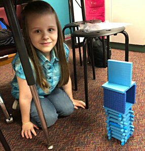

My name is Twyla! This is my webpage.
My Mommy says I have a very good sense of humor, and I'm very pretty, and smart too. I think I'm very good at drawing. Also I think I'm not very good at typing on the computer.. yet. (My Mommy is typing all of this for me.) I'm seven years old but I have a birthday coming up very soon. I'm in second grade right now and I love school! I go to an IB school. IB stands for International Baccalaureate. We have small classes and we're allowed to ask lots of questions. I have a very nice teacher and I like her class because I learn something new everyday.  I really like that I get to be in the same class with all the other kids from GT. GT stands for Gifted and Talented. I've been in GT since kindergarten.
I really like that I get to be in the same class with all the other kids from GT. GT stands for Gifted and Talented. I've been in GT since kindergarten.
My Daddy is the furry guy in the sun glasses. He's really smart and can read really fast. My Daddy can read about a book a day. He fixes computers at work and, apparently, he's very good at it. My Mommy is very funny. Mommy is soft and squishy and nice to sleep on. She says she's not good at math and she's allergic to cats. She's really good at cooking. She bakes yummy bread, makes cookies, and even makes homemade pizza. Mommy and I are vegetarians but Daddy isn't. I have the best Mommy and Daddy in the whole entire world. I don't have brothers or sister or pets.
I don't have lots of friends at school. I love the friends I do have. They are really nice and are all special to me. Here's a list of a few of my friends. This isn't everybody but it was getting pretty long! If you don't see your name here it doesn't mean I don't like you, I just got lazy.
- Tia
- She is really nice and has a really good sense of humor! She always dresses so pretty.
- Liam
- He is really funny and we get along really well. He LOVES dogs! (So do I!)
- Dylen
- He's a good friend who always wants me on his team. He loves wild animals, especially cats and snakes.
- J.P.
- He's my friend and library buddy. We go to the library every week.
- Lyric
- She's a new friend of mine this year and she is SO sweet! Her favorite animals are zebras, which is pretty cool.
- Diaya
- We just met this year and she's awesome. She's really pretty and smart and tall too. 
- Giana
- She is also very sweet! She does karate, which is awesome.
- Lia
- Lia is always nice and I get to sit next to her in class. She's really good at speaking Spanish.
- Phelan
- I also get to sit next to Phelan. He's really smart and one of my GT friends.
- Piper
- Piper is super nice and really good at writing. I think she's really good at singing too!